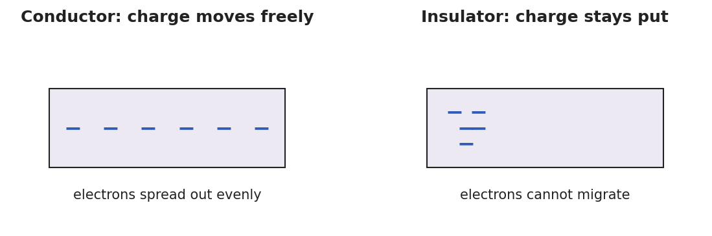

Unit: Electrostatics — Lesson 02: Conductors, Insulators, and Charging by Conduction
Phenomenon
Your teacher touches a charged rod to the metal knob of an electroscope. The thin metal leaves at the bottom spring apart — and stay apart even after the rod is taken away. A touch of a finger makes them collapse.

Driving Question
What decides whether charge spreads through an object or stays stuck in one spot?
Notice & Wonder
Watch the leaves spread and stay. Write what you notice and what you wonder.
Initial Model
Draw the electroscope. Show where the charge is right after the rod touches the knob, and which way it moves. Predict: would a wooden ruler touched to the knob do the same thing?
Investigate
Pick a material for the sphere, then press Touch rod to bring the charged rod to its surface. In a conductor the charge spreads evenly across the whole sphere; in an insulator it stays clustered right where the rod touched.
Material: conductor · Sphere charge: neutral
Make It Make Sense
- A negatively charged rod is touched to a neutral metal sphere. What sign is the sphere afterward, and what is this charging method called?
- Why does touching a charged metal object with your bare hand make its charge disappear?
- A charged balloon (an insulator) is pressed against a wooden block. Will the block become charged all over? Why or why not?
Stuck? Sentence frame
"A ___ (conductor / insulator) lets charge ___ (move / stay), so when it touches a charged object the charge ___."
Key Vocabulary (max 3)
- conductor — a material (such as a metal) in which charge moves freely, because some electrons are not bound to single atoms
- insulator — a material (such as rubber, glass, or plastic) in which charge stays put, because electrons are bound and cannot migrate
- charging by conduction — transferring charge by direct contact with a charged object; both objects end up with the same sign
Revise Your Model
Return to your electroscope drawing. Re-label it: is the metal a conductor or an insulator? Using conduction, write one sentence explaining why the leaves stayed spread after the rod was removed.
Return to the Phenomenon
On a Van de Graaff generator, why does every hair stand up, not just the ones near the dome? Predict in one sentence: the dome is a conductor, so the charge spreads to every strand; all the hairs get the same sign and repel each other.
Exit Ticket + Closing Reflection
- (a) Classify each as a conductor or insulator: copper wire, rubber band, aluminum foil, glass rod.
(b) A negatively charged rod is touched directly to a neutral metal sphere. What sign is the sphere afterward? Name the charging method.
(c) Explain in one sentence why a charged comb shares its charge with a metal doorknob, but not with a dry plastic cup. - Reflection: What did a groupmate notice during the sort that changed your sorting? Name one thing you'd test differently next time.